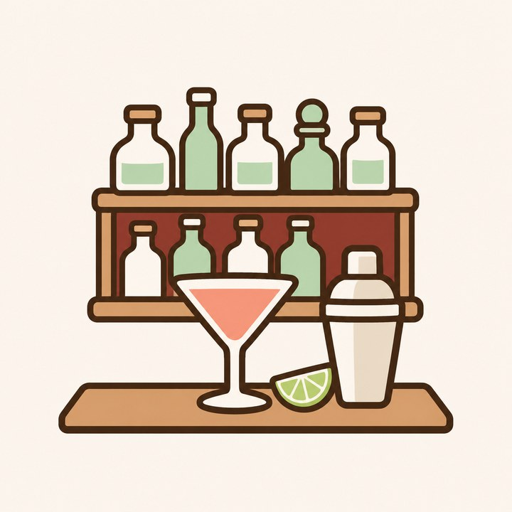

家の瓶から、カクテルの帳面
家にある瓶で、
今夜の一杯。
持っているお酒・割り材・果物を「棚」に入れると、収録の 446 杯（ノンアルコール 33 杯を含む）から、いま作れるカクテルと、あと1つ足せば作れるカクテルが分かります。分量は全部数字で、作り方の手順つき。
App Store・Google Play で配信予定20 歳未満の飲酒は法律で禁じられています。運転する人・妊娠中の人は飲まないでください。このアプリは、たくさん飲むことをすすめません。買い切りで全部の機能が使え、アプリ内課金・サブスクリプション・広告はありません。通信もしません。

こんな困りごとのために
家の瓶で何が作れるか分からない
棚に入れた瓶から「いま作れる」杯を並べます。足りないものが1つの杯は「あと1つ」に。
何を1本買い足せばいいか
足すと作れる杯が増える材料を、増える数の多い順に出します（例: ライムを足すと +9 杯）。
「少々」「適量」で困る
分量は全部 ml・ダッシュ・茶さじ・個の数字。IBA の公式 102 杯は1杯ずつ照合しました。
作った記録が残らない
作った日とメモ、作った回数、お気に入り、自分のレシピを手帳に残せます。
できること
| 収録 | 446 杯（ジン・ウォッカ・ラム・テキーラ・ウイスキー・ブランデー・リキュール・ワイン・ビール・日本酒・焼酎・ノンアルコール） |
|---|---|
| 棚 | 持っている材料を種類ごとに選ぶ。砂糖・塩・水・卵・牛乳などは持っている扱い |
| さがす | 名前（ひらがな・カタカナ・英語）・材料・ベース・度数の目安・味・作り方 |
| 1杯ずつ | グラスの形と中身の色の絵・棚にあるかの印・分量・手順・味の説明 |
| 手帳 | 作った記録・お気に入り・自分のレシピ・手帳の書き出しと読みこみ |